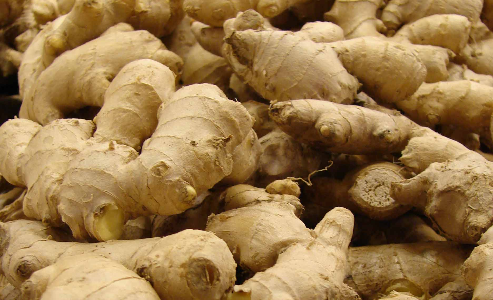

Ginger
Best Ginger Planting Practices: Ginger loves hot, humid conditions and rich soil with lots of nutrients. In our cool climate the plants do well in full sun; in more southern locations the plants may need partial shade. You can buy ginger online from seed companies, but you can also purchase organic ginger from your local market. When purchasing ginger rhizomes for planting, look for light-colored, thin-skinned organic ginger that is plump and firm with several bumpy nodules.To prepare ginger for planting, cut rhizomes into 2″-3″ pieces (each piece containing at least 2 to 3 nodules). Allow cut ends to dry and heal over before planting.
Best Fertilizers for Ginger Farms: While ginger is growing, you can add a few inches of compost to growing ginger sprouts, similar to “hilling” potatoes. This can encourage more growth in the rhizomes. If your ginger is not growing well, consider feeding every few weeks with an organic fertilizer such as liquid seaweed or fish emulsion. Testing your soil will help you know exactly what the soil is lacking.
Pest management for Ginger: Usually healthy, although red spider mite can be an occasional problem. Increasing the humidity by misting plants twice daily with warm water helps discourage these pests. To control shoot borer and leaf roller, the spray of indoxacarb of 10 ml per 15 litre of water or novaluron of 10 ml per 15 litre of water is very effective if sprayed at 15 days interval. Rhizome scale insects destroys rhizome and it can be controlled by dipping the seed rhizome in quinalphos by dissolving 1 ml in 1 litre of water. To avoid rhizome rot, good drainage and treatment of the seed rhizome with dissolving 3 gm of combination of carbendazim and mancozeb (readily available in the market) in 1 litre of water for nearly 30 minutes, before storage should be done. Bacterial wilt which causes milky ooze as gentle pressing of rhizomes and can be effectively controlled by treating the seed rhizome with dissolving 2 gm of streptocycln in 1 litre of water for 30 minutes.
Storage techniques for Ginger: In cool climates, harvest ginger all at once before freezing temperatures. In warmer climates, harvest ginger after the leaves begin to yellow and die back. Wait to harvest as long as possible for the largest rhizomes.To harvest, gently dig up the entire plant. In warm areas, you can leave the ginger in the ground and harvest as needed. Plants will go dormant during the cooler months and shorter days of winter, but new shoots will emerge in the spring.After harvesting ginger, rinse it well and then cut off shoots and large roots. Use the leaves in tea.Store fresh ginger in the refrigerator or freezer in plastic resealable bags. Unpeeled ginger keeps for about a month in the refrigerator or up to a year frozen. Dehydrate ginger by peeling (young, fresh ginger may not need to be peeled) and slicing. Dehydrate at 95°F for 8-12 hours or until ginger is crisp and breaks when bent.